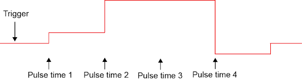
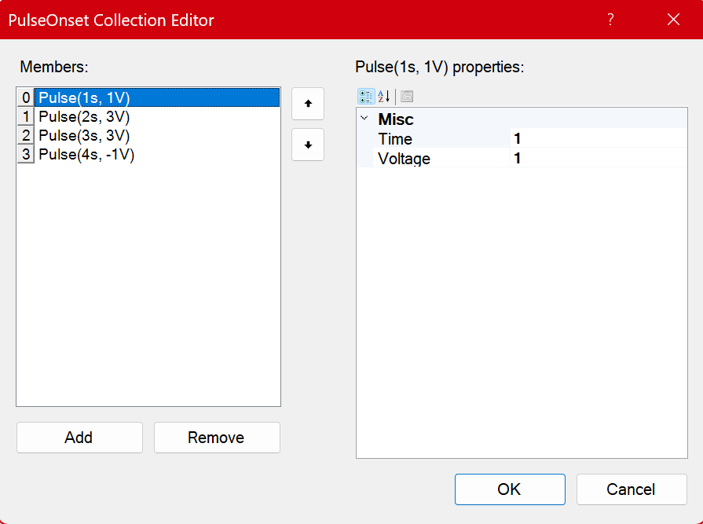

Custom Pulse Trains
The Bonsai.PulsePal package provides a set of operators for creating more complex pulse trains and waveforms such as the example below.

(Image reproduced from the Pulse Pal Wiki)
Custom pulse trains are uploaded to the Pulse Pal, which has 2 memory slots for 2 custom pulse trains of up to 1000 pulses each. Custom pulse trains are defined by an array of doubles specifying the pulse onset times (with respect to trigger onset) and voltages. Pulse duration is set separately by the Phase1Duration on the output channel that the custom pulse train is being played (and is thus identical for all the pulses).
Constructing custom pulse trains
Custom pulse trains can be constructed using the CustomPulseTrain operator and sent to the device using the SendCustomPulseTrain operator. When sending the custom pulse train to the Pulse Pal, the CustomTrainIdentifier needs to be set to either of the two custom train IDs that the Pulse Pal can store. Although the Phase1Duration property only needs to be set during playback, it can be set at the same time using the ConfigureChannelParameter operator with the Phase1Duration property. The workflow below encapsulates all of these steps.
In the CustomPulseTrain operator, the array of doubles specifying the pulse onset times and voltages can be set using the PulseOnsetCollection editor. The screenshot below reproduces the example custom pulse train in the image at the beginning of this section.

Note
Pulse onset times and voltages are absolute values (they do not stack).
An alternate way of constructing the custom pulse train is to create a series of individual pulses using the PulseOnset operator, concatenate it and pass it as an array to the SendCustomPulseTrain operator as follows.
Custom waveform generation
Custom pulse trains can also be constructed from a function generator and sent to the Pulse Pal using the SendCustomWaveform operator. When sending the custom waveform to the Pulse Pal, the CustomTrainIdentifier needs to be set to either of the two custom train IDs that the Pulse Pal can store. As the custom pulse train is limited to 1000 pulses, only the first buffer of the function generator output should be captured and sent.
Warning
The SendCustomWaveform operator does not "exactly" reproduce the input waveform as only pulse onset and voltages are sent.
Similar to the SendCustomPulseTrain operator, pulse duration is set by the Phase1Duration on the output channel during playback.
This can be addressed by setting the Phase1Duration to the value that matches the sampling rate of the SendCustomWaveform operator.
However it is still advised that custom pulse trains generated by this operator be verified with an oscilloscope.
Custom train playback settings
Besides configuring the correct output channel to playback the pulse train from the Channel property in either the CreatePulsepal or ConfigureOutputChannel operators, there are a few unique properties which must be set on the channel to enable custom train playback.
| Category | Property Name | Value | Description |
|---|---|---|---|
| Custom Train | CustomTrainIdentity |
CustomTrain1/CustomTrain2 | Sets which of the two custom trains are played back on that output channel. |
| Custom Train | CustomTrainLoop |
True/False | If set to true, the custom train playback is looped continuously until the PulseTrainDuration is finished. |
| Custom Train | CustomTrainTarget |
PulseOnset/BurstOnset | The default (PulseOnset) is the behaviour that has been discussed in this article, see below note. |
| Pulse Timing | Phase1Duration |
0.0001 - 3600 (secs) | The duration of each pulse in the custom pulse train is set by this property and is identical for all the pulses. |
Warning
The CustomTrainLoop differs significantly from the ContinuousLoop playback of normal pulse trains (which are looped continuously)
Note
If CustomTrainTargetis set to BurstOnset, the onset times and voltages that are defined for pulses in the custom pulse train are instead converted to onset times and voltages for bursts of pulses. When this option is set, the BurstDuration, Phase1Duration and InterPulseInterval properties needs to be defined.